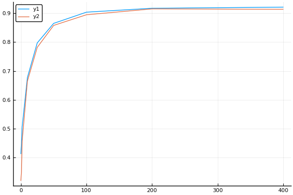
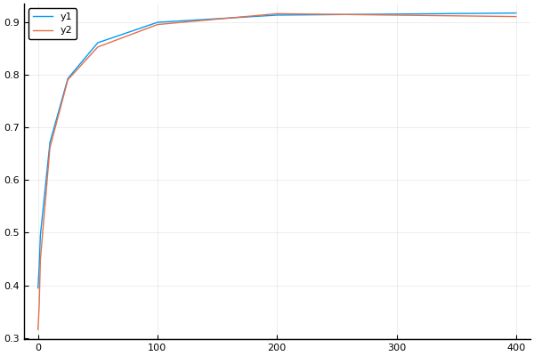
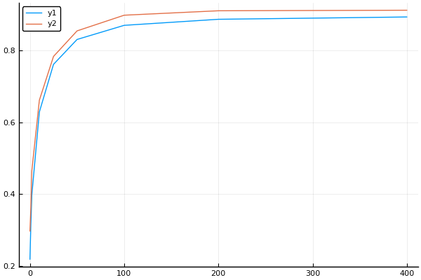
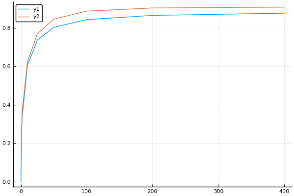

Effect of increasing phenotypic data on components of IGS-SSBR evaluation¶
Theory¶
IGS-SSBR evaluation has a marker and polygenic components. This simulation will examine the accurcacy of these components as the amount of phenotypic data increases.
Model¶
\[\begin{split}
\begin{align}
\mathbf{y} &= \mathbf{1}\mu + \mathbf{Z}\mathbf{M}\boldsymbol{\alpha} + \mathbf{Zu} + \mathbf{e} \\
&= \mathbf{1}\mu + \mathbf{Z}\mathbf{g} + \mathbf{Z}\mathbf{u} + \mathbf{e} \\
&= \mathbf{1}\mu + \mathbf{Z}(\mathbf{g} + \mathbf{u}) + \mathbf{e} \\
&= \mathbf{1}\mu + \mathbf{Z}\mathbf{a} + \mathbf{e},
\end{align}
\end{split}\]
where
\[\begin{split}
\begin{align}
\text{Var}(\mathbf{a}) &= \mathbf{G}\sigma^2_g + \mathbf{A}\sigma^2_u\\
&= (\mathbf{G}\frac{\sigma^2_g}{\sigma^2_a} + \mathbf{A}\frac{\sigma^2_u}{\sigma^2_a})\sigma^2_a\\
&= \mathbf{H}\sigma^2_a,
\end{align}
\end{split}\]
\(\mathbf{G} = \mathbf{M}\mathbf{M}'/(pH)\), \(p\) is the number of markers, \(H\) is the average heterozygosity, \(\mathbf{A}\) is the pedigree-based additive relationship matrix, and \(\sigma^2_a = \sigma^2_g + \sigma^2_u\).
Mixed model equations:¶
\[\begin{split}
\begin{bmatrix}
\mathbf{1}'\mathbf{1} & \mathbf{1}'\mathbf{Z}\\
\mathbf{1} & \mathbf{Z'}\mathbf{Z} + \mathbf{H}^{-1}\lambda
\end{bmatrix}
\begin{bmatrix}
\hat{\mu} \\
\hat{\mathbf{a}}
\end{bmatrix}
=
\begin{bmatrix}
\mathbf{1}'\mathbf{y}\\
Z'\mathbf{y}\\
\end{bmatrix},
\end{split}\]
where \(\lambda = \sigma^2_e/\sigma^2_a\). BLUP of \(\mathbf{g}\) and \(\mathbf{u}\) can be obtained as:
\[
\hat{\mathbf{g}} = \frac{\sigma^2_g}{\sigma^2_a}\mathbf{G}\mathbf{H}^{-1}\hat{\mathbf{a}}
\]
and $\( \hat{\mathbf{u}} = \frac{\sigma^2_u}{\sigma^2_a}\mathbf{A}\mathbf{H}^{-1}\hat{\mathbf{a}} \)$
using XSim
using JWAS
using DelimitedFiles
using CSV
using Statistics
using LinearAlgebra
using Plots
using Distributions
using Random
using Printf
pyplot()
Plots.PyPlotBackend()
Functions¶
Function halfsibFamily: get pedigree for halfsib family¶
function halfsibFamily(n)
ind = 1:(1+2n)
sire = [0;repeat([0],n);repeat([1],n)]
dam = [0;repeat([0],n);2:n+1]
ped = [ind sire dam]
end
halfsibFamily (generic function with 1 method)
Function extendPed: extend pedigree¶
function extendPed(ped,ped1)
n = ped[end,1]
ind = ped1[:,1] .+ n
sire = [s==0 ? 0 : s+n for s in ped1[:,2]]
dam = [d==0 ? 0 : d+n for d in ped1[:,3]]
ped = [ped;
[ind sire dam]
]
end
extendPed (generic function with 1 method)
Function simData: simulate marker and QTL genotypes¶
function simData(nn,qtl,mrk,h2,founders)
ped = halfsibFamily(nn[1])
for i in nn[2:end]
ped1 = halfsibFamily(i)
ped = extendPed(ped,ped1)
end
writedlm("ped.csv",ped)
pedigree = get_pedigree("ped.csv",header=false,separator='\t');
temp = Matrix(JWAS.PedModule.AInverse(pedigree));
indx = [pedigree.idMap[string(i)].seqID for i in 1:size(ped,1)]
Ai = temp[indx,indx]
A = inv(Ai);
animals = samplePed(ped,founders)
QM = getOurGenotypes(animals)
M = QM[:,mrk]
Q = QM[:,qtl]
n,p = size(M)
return Q,M,A,ped
end
simData (generic function with 1 method)
Function getMME: get MME¶
function getMME(nn,Q,M,A,ped,h2,wtMrk)
n,p = size(M)
sires = unique(ped[:,2])
sires = sires[2:end]
dams = unique(ped[:,3])
dams = dams[2:end]
offsp = setdiff(ped[:,1],[sires;dams])
cand = [1; sires] # candidates
offsp = setdiff(offsp,cand)
nOffsp = size(offsp,1)
Z = Matrix{Float64}(I,n,n)[offsp,:]
ZPZ = Diagonal(Z'Z);
G = M*M'
Het = mean(diag(G))
G = G/Het + I*0.001
genVar = mean([dot(Q[i,:],Q[i,:]) for i=1:size(Q,1)])
resVar = genVar*(1-h2)/h2
var_g = genVar*wtMrk
var_u = genVar*(1.0-wtMrk)
H = (G*var_g/genVar + A*var_u/genVar)
genVarVec = diag(H)*genVar
Hi = inv(H)
J = ones(nOffsp)
λ = resVar/genVar
mme = [
J'J J'Z
Z'J ZPZ+Hi*λ
]
Ch = cholesky(Symmetric(mme));
Pg = var_g/genVar*G*Hi
Pu = var_u/genVar*A*Hi
mmei = inv(Ch)
d = diag(mmei)
d = d[2:end]
pev = d[cand]*resVar
coruHatu = (genVarVec[cand] - pev) ./genVarVec[cand]
coruHatu = map(x->x>0.0 ? sqrt(x) : 0.0,coruHatu)
println("coruHatu")
for i=1:size(nn,1)
@printf("%4d %5.2f\n",nn[i],coruHatu[i])
end
return Pg,Pu,Ch,J,Z,offsp,cand,genVar,resVar,coruHatu
end
getMME (generic function with 1 method)
Function simBLUP: simulate phenotypes and get BLUPs¶
function simBLUP(Q,Pg,Pu,Ch,J,Z,n,offsp,cand,resVar)
α = randn(size(Q,2))
a = Q*α
y = a + randn(n)*sqrt(resVar)
y = y[offsp]
rhs = [J'y; Z'y]
sol = Ch\rhs
aHat = sol[2:end] # .+ sol[1]
gHat = Pg*aHat
uHat = Pu*aHat
#a = a .- mean(a)
#aHat = aHat .- mean(aHat)
#gHat = gHat .- mean(gHat)
#uHat = uHat .- mean(uHat)
[aHat gHat uHat a][cand,:]
end
simBLUP (generic function with 1 method)
Function accuracyBLUP: compupte correlations and regressions between predictor and predictants¶
function accuracyBLUP(res,j)
pred = vcat([i[j,:]' for i in res]...)
cor_u_uHat = cor(pred)[1:3,4]
covMat = cov(pred)
d = diag(covMat)
reg_u_uHat = covMat[1:3,4] ./ d[1:3]
[cor_u_uHat; reg_u_uHat]
end
accuracyBLUP (generic function with 1 method)
function varBLUP(res,j)
pred = vcat([i[j,:]' for i in res]...)
cor_u_uHat = cor(pred)[1:3,4]
vars = var(pred,dims=1)
end
varBLUP (generic function with 1 method)
function covBLUP(res,j)
pred = vcat([i[j,:]' for i in res]...)
covs = cov(pred,dims=1)
[covs[1:3,4]'./covs[4,4] covs[4,4]]
end
covBLUP (generic function with 1 method)
Use of XSim to Simulate Genotypes¶
chrLength = 30.0
numChr = 1
numLoci = 6000
mutRate = 0.0
0.0
Setup of map positions for markers and QTL¶
mapPos = fill(0,60_000)
mrkPos = 10:20:60_000
qtlPos = mrkPos .+ 1
mapPos[mrkPos] .= 1
mapPos[qtlPos] .= 2
r = 30.00/60_000
map_pos = []
for (i,x) in enumerate(mapPos)
if x>0
push!(map_pos,i*r)
end
end
mrkIndx = []
count = 0
for x in mapPos
if x>0
count += 1
if x==1
push!(mrkIndx,count)
end
end
end
qtlIndx = []
count = 0
for x in mapPos
if x>0
count += 1
if x==2
push!(qtlIndx,count)
end
end
end
Simulation of Founders¶
geneFreq = fill(0.5,numLoci)
build_genome(numChr,chrLength,numLoci,float.(geneFreq),float.(map_pos),mutRate);
G0 = Any[]
popSizeFounder = 100
sires = sampleFounders(popSizeFounder)
dams = sampleFounders(popSizeFounder);
Sampling 100 animals into base population.
Sampling 100 animals into base population.
Simulation of random mating to generate LD¶
popSize = 200
nGen = 100
sires,dams,gen = sampleRan(popSize, nGen,sires,dams;gen=1);
Generation 2: sampling 100 males and 100 females
Generation 3: sampling 100 males and 100 females
Generation 4: sampling 100 males and 100 females
Generation 5: sampling 100 males and 100 females
Generation 6: sampling 100 males and 100 females
Generation 7: sampling 100 males and 100 females
Generation 8: sampling 100 males and 100 females
Generation 9: sampling 100 males and 100 females
Generation 10: sampling 100 males and 100 females
Generation 11: sampling 100 males and 100 females
Generation 12: sampling 100 males and 100 females
Generation 13: sampling 100 males and 100 females
Generation 14: sampling 100 males and 100 females
Generation 15: sampling 100 males and 100 females
Generation 16: sampling 100 males and 100 females
Generation 17: sampling 100 males and 100 females
Generation 18: sampling 100 males and 100 females
Generation 19: sampling 100 males and 100 females
Generation 20: sampling 100 males and 100 females
Generation 21: sampling 100 males and 100 females
Generation 22: sampling 100 males and 100 females
Generation 23: sampling 100 males and 100 females
Generation 24: sampling 100 males and 100 females
Generation 25: sampling 100 males and 100 females
Generation 26: sampling 100 males and 100 females
Generation 27: sampling 100 males and 100 females
Generation 28: sampling 100 males and 100 females
Generation 29: sampling 100 males and 100 females
Generation 30: sampling 100 males and 100 females
Generation 31: sampling 100 males and 100 females
Generation 32: sampling 100 males and 100 females
Generation 33: sampling 100 males and 100 females
Generation 34: sampling 100 males and 100 females
Generation 35: sampling 100 males and 100 females
Generation 36: sampling 100 males and 100 females
Generation 37: sampling 100 males and 100 females
Generation 38: sampling 100 males and 100 females
Generation 39: sampling 100 males and 100 females
Generation 40: sampling 100 males and 100 females
Generation 41: sampling 100 males and 100 females
Generation 42: sampling 100 males and 100 females
Generation 43: sampling 100 males and 100 females
Generation 44: sampling 100 males and 100 females
Generation 45: sampling 100 males and 100 females
Generation 46: sampling 100 males and 100 females
Generation 47: sampling 100 males and 100 females
Generation 48: sampling 100 males and 100 females
Generation 49: sampling 100 males and 100 females
Generation 50: sampling 100 males and 100 females
Generation 51: sampling 100 males and 100 females
Generation 52: sampling 100 males and 100 females
Generation 53: sampling 100 males and 100 females
Generation 54: sampling 100 males and 100 females
Generation 55: sampling 100 males and 100 females
Generation 56: sampling 100 males and 100 females
Generation 57: sampling 100 males and 100 females
Generation 58: sampling 100 males and 100 females
Generation 59: sampling 100 males and 100 females
Generation 60: sampling 100 males and 100 females
Generation 61: sampling 100 males and 100 females
Generation 62: sampling 100 males and 100 females
Generation 63: sampling 100 males and 100 females
Generation 64: sampling 100 males and 100 females
Generation 65: sampling 100 males and 100 females
Generation 66: sampling 100 males and 100 females
Generation 67: sampling 100 males and 100 females
Generation 68: sampling 100 males and 100 females
Generation 69: sampling 100 males and 100 females
Generation 70: sampling 100 males and 100 females
Generation 71: sampling 100 males and 100 females
Generation 72: sampling 100 males and 100 females
Generation 73: sampling 100 males and 100 females
Generation 74: sampling 100 males and 100 females
Generation 75: sampling 100 males and 100 females
Generation 76: sampling 100 males and 100 females
Generation 77: sampling 100 males and 100 females
Generation 78: sampling 100 males and 100 females
Generation 79: sampling 100 males and 100 females
Generation 80: sampling 100 males and 100 females
Generation 81: sampling 100 males and 100 females
Generation 82: sampling 100 males and 100 females
Generation 83: sampling 100 males and 100 females
Generation 84: sampling 100 males and 100 females
Generation 85: sampling 100 males and 100 females
Generation 86: sampling 100 males and 100 females
Generation 87: sampling 100 males and 100 females
Generation 88: sampling 100 males and 100 females
Generation 89: sampling 100 males and 100 females
Generation 90: sampling 100 males and 100 females
Generation 91: sampling 100 males and 100 females
Generation 92: sampling 100 males and 100 females
Generation 93: sampling 100 males and 100 females
Generation 94: sampling 100 males and 100 females
Generation 95: sampling 100 males and 100 females
Generation 96: sampling 100 males and 100 females
Generation 97: sampling 100 males and 100 females
Generation 98: sampling 100 males and 100 females
Generation 99: sampling 100 males and 100 females
Generation 100: sampling 100 males and 100 females
Generation 101: sampling 100 males and 100 females
popSize = 1000
nGen = 1
sires,dams,gen = sampleRan(popSize, nGen,sires,dams;gen=gen);
Generation 102: sampling 500 males and 500 females
parents=concatCohorts(sires,dams);
Simulation of genotypes¶
Random.seed!(31415926123);
nn = [0,1,2,10,25,50,100,200,400]
h2 = 0.25
wtMrk = 1.0
Q,M,A,ped = simData(nn,qtlIndx,mrkIndx,h2,parents);
The delimiter in ped.csv is ' '.
coding pedigree... 100%|████████████████████████████████| Time: 0:00:00
calculating inbreeding... 100%|█████████████████████████| Time: 0:00:00
Pedigree informatin:
#individuals: 1585
#sires: 8
#dams: 788
#founders: 797
mean(Q)
1.0077846477392218
Qc = Q .- mean(Q,dims=1)
Mc = M .- mean(M,dims=1);
Simulation of BLUP Evaluations¶
Weights for marker and pedigree components: 1.0, 0.0¶
wtMrk = 1.0
Pg,Pu,Ch,J,Z,offsp,cand,genVar,resVar,coruHatu = getMME(nn,Qc,Mc,A,ped,h2,wtMrk);
coruHatu
0 0.41
1 0.45
2 0.51
10 0.68
25 0.80
50 0.86
100 0.90
200 0.92
400 0.92
nReps = 10_000
n = size(Q,1)
res = [simBLUP(Qc,Pg,Pu,Ch,J,Z,n,offsp,cand,resVar) for i=1:nReps]
resAccuracy = [accuracyBLUP(res,j) for j=1:size(cand,1)]
corrReg = hcat(resAccuracy...)'
[nn corrReg]
9×7 Array{Float64,2}:
0.0 0.320613 0.320613 NaN 0.780689 0.780689 NaN
1.0 0.351422 0.351422 NaN 0.796203 0.796203 NaN
2.0 0.456769 0.456769 NaN 0.929951 0.929951 NaN
10.0 0.664682 0.664682 NaN 1.00675 1.00675 NaN
25.0 0.781675 0.781675 NaN 0.984394 0.984394 NaN
50.0 0.857616 0.857616 NaN 1.00101 1.00101 NaN
100.0 0.894532 0.894532 NaN 0.997656 0.997656 NaN
200.0 0.914775 0.914775 NaN 1.00142 1.00142 NaN
400.0 0.913499 0.913499 NaN 0.99095 0.99095 NaN
plot(nn,[coruHatu corrReg[:,1]])

covMat = [nn vcat([covBLUP(res,i) for i=1:9]...)]
9×5 Array{Float64,2}:
0.0 0.131669 0.131669 0.0 1119.15
1.0 0.155108 0.155108 0.0 1149.02
2.0 0.224353 0.224353 0.0 1223.98
10.0 0.43884 0.43884 0.0 1183.26
25.0 0.620702 0.620702 0.0 1149.47
50.0 0.734761 0.734761 0.0 1159.73
100.0 0.802067 0.802067 0.0 1162.17
200.0 0.835627 0.835627 0.0 1101.23
400.0 0.842101 0.842101 0.0 895.359
res100 = [coruHatu, corrReg, covMat];
Weights for marker and pedigree components: 0.95, 0.05¶
wtMrk = 0.95
Pg,Pu,Ch,J,Z,offsp,cand,genVar,resVar,coruHatu = getMME(nn,Qc,Mc,A,ped,h2,wtMrk);
coruHatu
0 0.39
1 0.44
2 0.49
10 0.67
25 0.79
50 0.86
100 0.90
200 0.91
400 0.92
nReps = 10_000
n = size(Q,1)
res = [simBLUP(Qc,Pg,Pu,Ch,J,Z,n,offsp,cand,resVar) for i=1:nReps]
resAccuracy = [accuracyBLUP(res,j) for j=1:size(cand,1)]
corrReg = hcat(resAccuracy...)'
[nn corrReg]
9×7 Array{Float64,2}:
0.0 0.315623 0.315623 -0.0221897 0.781113 0.781113 -3.23675e14
1.0 0.359904 0.359025 0.206266 0.827613 0.837482 16.3714
2.0 0.448452 0.446808 0.324093 0.938927 0.956399 19.2653
10.0 0.661756 0.660177 0.576622 1.01 1.0497 18.0835
25.0 0.790701 0.790065 0.714394 0.999611 1.04488 18.1887
50.0 0.852845 0.852346 0.787675 1.00051 1.04629 19.0191
100.0 0.895584 0.895131 0.803806 0.995472 1.04132 17.8218
200.0 0.916191 0.915738 0.844772 1.00743 1.05841 17.4413
400.0 0.910723 0.910016 0.838198 0.976957 1.02944 15.7771
plot(nn,[coruHatu corrReg[:,1]])

covMat = [nn vcat([covBLUP(res,i) for i=1:9]...)]
9×5 Array{Float64,2}:
0.0 0.127534 0.127534 -1.52123e-18 1081.79
1.0 0.156512 0.153913 0.00259877 1123.84
2.0 0.214191 0.208739 0.00545211 1204.08
10.0 0.433585 0.415198 0.0183865 1179.81
25.0 0.625452 0.597393 0.0280591 1173.35
50.0 0.726973 0.694351 0.0326215 1159.23
100.0 0.805718 0.769465 0.0362536 1127.14
200.0 0.833215 0.792298 0.0409167 1104.33
400.0 0.84898 0.804448 0.0445315 867.404
res95 = [coruHatu, corrReg, covMat];
Weights for marker and pedigree components: 0.5, 0.5¶
wtMrk = 0.5
Pg,Pu,Ch,J,Z,offsp,cand,genVar,resVar,coruHatu = getMME(nn,Qc,Mc,A,ped,h2,wtMrk);
coruHatu
0 0.22
1 0.32
2 0.40
10 0.63
25 0.76
50 0.83
100 0.87
200 0.89
400 0.89
nReps = 10_000
n = size(Q,1)
res = [simBLUP(Qc,Pg,Pu,Ch,J,Z,n,offsp,cand,resVar) for i=1:nReps]
resAccuracy = [accuracyBLUP(res,j) for j=1:size(cand,1)]
corrReg = hcat(resAccuracy...)'
[nn corrReg]
9×7 Array{Float64,2}:
0.0 0.297245 0.297245 -0.000676473 1.27919 1.27919 -5.77096e12
1.0 0.364331 0.368779 0.225209 1.11311 1.48888 1.81743
2.0 0.464943 0.458464 0.358773 1.15979 1.65423 2.16962
10.0 0.661383 0.650213 0.60147 1.0543 1.81007 1.9951
25.0 0.782923 0.769447 0.741424 1.02639 1.82461 2.01557
50.0 0.85402 0.841976 0.825615 1.01686 1.8241 2.07428
100.0 0.897616 0.883532 0.855103 1.02432 1.80037 2.07144
200.0 0.909968 0.895754 0.87686 0.991399 1.83523 1.93178
400.0 0.911446 0.89622 0.880134 0.95393 1.80643 1.81749
plot(nn,[coruHatu corrReg[:,1]])

covMat = [nn vcat([covBLUP(res,i) for i=1:9]...)]
9×5 Array{Float64,2}:
0.0 0.0690705 0.0690705 -7.92964e-20 1131.39
1.0 0.11925 0.0913424 0.0279072 1137.68
2.0 0.186389 0.127061 0.0593275 1210.16
10.0 0.414897 0.23357 0.181328 1160.05
25.0 0.597211 0.324479 0.272732 1172.13
50.0 0.717259 0.388643 0.328616 1159.24
100.0 0.786583 0.433592 0.352991 1157.55
200.0 0.835225 0.437207 0.398018 1074.01
400.0 0.870853 0.444641 0.426212 907.048
res50 = [coruHatu, corrReg, covMat];
Weights for marker and pedigree components: 0.0, 1.0¶
wtMrk = 0.0
Pg,Pu,Ch,J,Z,offsp,cand,genVar,resVar,coruHatu = getMME(nn,Qc,Mc,A,ped,h2,wtMrk);
coruHatu
0 0.00
1 0.25
2 0.34
10 0.61
25 0.74
50 0.80
100 0.84
200 0.86
400 0.88
nReps = 10_000
n = size(Q,1)
res = [simBLUP(Qc,Pg,Pu,Ch,J,Z,n,offsp,cand,resVar) for i=1:nReps]
resAccuracy = [accuracyBLUP(res,j) for j=1:size(cand,1)]
corrReg = hcat(resAccuracy...)'
[nn corrReg]
9×7 Array{Float64,2}:
0.0 NaN NaN NaN NaN NaN NaN
1.0 0.249701 NaN 0.249701 0.991986 NaN 0.991986
2.0 0.370423 NaN 0.370423 1.10663 NaN 1.10663
10.0 0.623434 NaN 0.623434 1.04952 NaN 1.04952
25.0 0.769185 NaN 0.769185 1.05995 NaN 1.05995
50.0 0.845353 NaN 0.845353 1.0413 NaN 1.0413
100.0 0.887155 NaN 0.887155 1.02686 NaN 1.02686
200.0 0.903331 NaN 0.903331 0.983922 NaN 0.983922
400.0 0.907534 NaN 0.907534 0.902145 NaN 0.902145
plot(nn,[coruHatu corrReg[:,1]])

covMat = [nn vcat([covBLUP(res,i) for i=1:9]...)]
9×5 Array{Float64,2}:
0.0 0.0 0.0 0.0 1117.97
1.0 0.0628542 0.0 0.0628542 1119.27
2.0 0.123992 0.0 0.123992 1188.35
10.0 0.370332 0.0 0.370332 1161.37
25.0 0.558183 0.0 0.558183 1180.55
50.0 0.686281 0.0 0.686281 1162.75
100.0 0.766457 0.0 0.766457 1152.08
200.0 0.829341 0.0 0.829341 1104.95
400.0 0.912956 0.0 0.912956 898.515